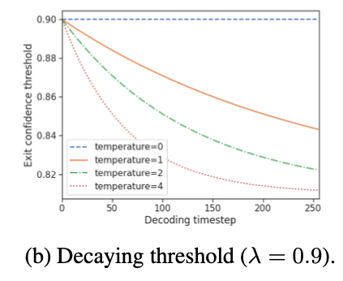
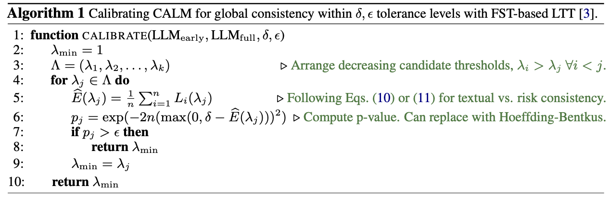
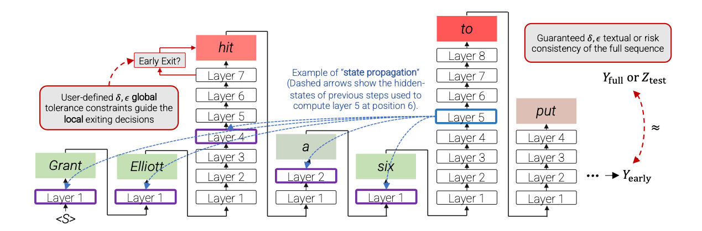

Confident Adaptive Language Modeling
An Early Exiting example that tries to address these issues:
- Confidence measure
- Sequence level constraints at token-level exit decisions;
- Attending previous tokens when decoding;
Confidence Measure and Sequence-level Constraints
This framework uses a decaying threshold for each time step for exit decisions.
 The model becomes more relaxed as the generation reaches the end. This comes from the observation that early perturbations degrade the performance more than late perturbations.
Deciding which

Here,
- Dissimilarity measure that measures the distance for textual consistency between the generation from an early exiting model and a full model. The smaller, the better.
- Risk consistency measure that measures the risk between two generations. The lower, the better. This is where the sentence level constraints are incorporated into the decisions.
This framework uses
Attending Previous Tokens When Decoding

At step 6, layer 5, previous steps’ early layers’ hidden states are copied directly as the previous layer’s output.todo Why is this needed if all inputs are concatenated for next step?